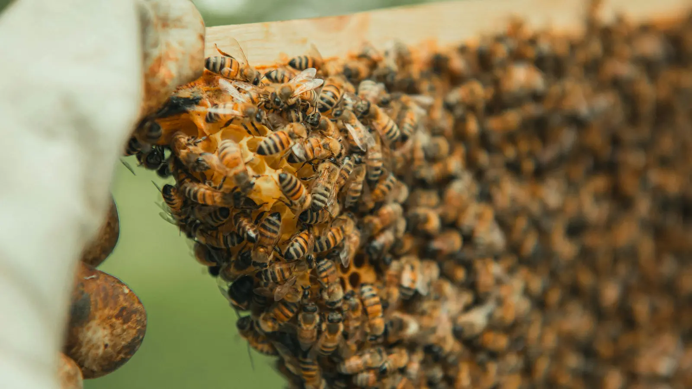

Getting Started with Beekeeping
Getting Started with Beekeeping
Last updated: 15 August 2026
If you are thinking about keeping honey bees in the UK, this guide will walk you through the main decisions you need to make before ordering your first hive or colony. Beekeeping is rewarding, but it also comes with responsibilities to your bees, your neighbours, and the wider environment.
Whether you are drawn to the idea of producing your own honey, supporting pollinators, or simply learning more about these remarkable insects, it is worth spending time on the foundations first. Reading, talking to experienced beekeepers, and visiting local apiaries will give you a much clearer picture of what is involved across a full season in a UK climate.
Learn the basics and find local support

Before buying any equipment, spend some time learning the basics of bee biology, annual cycles and hive management. Local beekeeping associations often run beginner courses and practical sessions where you can handle frames under supervision and ask questions. This is one of the best ways to understand whether beekeeping is right for you.
A good starting point is your nearest association or club, as they usually know the local forage, climate and common issues in your area. Many associations are affiliated with national bodies and offer insurance as part of their membership, which is strongly recommended once you have bees.
Check that your location is suitable
Honey bees need a safe, reasonably sheltered location with access to forage and water. In the UK this might be a back garden, an allotment, a smallholding or a shared association apiary. Think about:
- Distance from neighbours, paths, schools and play areas.
- How you will manage flight paths so bees fly up and away.
- Access for inspections, moving equipment and lifting supers.
- Whether vehicles can reach the site if you ever need to move colonies.
If your own garden is not suitable, a local beekeeping association or landowner may be able to offer space in an established apiary. Wherever you place your hives, you remain responsible for managing them safely and considerately.
Understand the time commitment
Beekeeping is seasonal. During spring and summer you will typically inspect hives every 7–10 days to monitor queen performance, brood pattern, stores and space. In autumn you will prepare colonies for winter, and in winter you will do less hands-on work but still monitor health, stores and weather. It is important to be realistic about the time and physical effort required, especially if you plan to run more than one hive.
If you are unsure how the year fits together, the Year in the Apiary section of this site sets out typical tasks for each month in a UK season.
What equipment and bees will you need?
As a beginner, you will need a complete hive, protective clothing, basic tools and, of course, bees. There are several hive types used in the UK, such as National, Langstroth and Commercial. Most beginners in the UK start with a National hive because it is widely supported and easy to source spare parts for.
It is worth taking time to compare options, talk to local beekeepers and think about what will be easiest to manage and move. The Beekeeping Equipment section covers suits, smokers, hive tools and other items in more depth.
How much does it cost to start beekeeping in the UK?
Costs vary depending on the hive type you choose and where you buy your bees, but the list below gives a rough idea of what many new beekeepers in the UK might spend to get started with one colony:
- Complete hive: around £200–£350 for a floor, brood box, supers, frames and roof.
- Bee suit and gloves: roughly £60–£120 for a full suit and basic gauntlets.
- Smoker and hive tool: approximately £30–£60 combined.
- Frames and foundation: around £20–£40 per box, depending on supplier.
- Nucleus colony (nuc) of bees: often £150–£250 from a reputable UK supplier or association.
- Association membership and insurance: typically £25–£40 per year.
You may also want to budget for extra equipment such as a spare hive or nucleus box, additional supers for honey, and basic storage for equipment. Exact prices change over time, but these ranges reflect typical UK costs for hobby beekeepers in recent seasons.
Getting your first bees
Most new beekeepers in the UK start with a nucleus colony, which is a small established colony with a laying queen on several frames of brood and stores. These are usually available in late spring or early summer. Your local association can often advise on reputable suppliers, and may even supply bees to members directly.
Wherever you buy your bees, look for healthy brood, calm temperament and clear communication from the seller about the queen's origin and age. Avoid buying bees from unproven sources or random online adverts, as bringing disease into your area can affect many other beekeepers.
Your first season in the apiary
In your first year, aim to learn the basics well rather than chasing honey production. Regular inspections will help you understand how the colony grows, stores nectar, raises brood and responds to weather changes. Make simple notes after each inspection so you can track progress and spot patterns from week to week. If you prefer digital records, the HiveTag beekeeping app lets you keep inspections, hive records, tasks and notes together in one place.
You will find it helpful to read the Hive management and Bee behaviour pages alongside this guide, so you can connect what you see in your own hives with the wider life cycle of the colony.
Health, hygiene and legal responsibilities
Good hive hygiene and regular inspections are essential parts of responsible beekeeping. Learning to recognise the signs of healthy brood, enough stores and good queen performance will make it much easier to spot when something is wrong.
The sections on Hive hygiene and Bee diseases give an overview of common problems. New beekeepers in the UK are also encouraged to register on the National Bee Unit's BeeBase so that inspectors can contact them if there is an outbreak of a notifiable disease nearby.
Getting Started – Frequently Asked Questions
Many small UK gardens can host a hive if they are well planned. You will need a safe flight path, space to stand behind the hive for inspections, and neighbours who are comfortable with bees being nearby. If your garden is very small or there is a lot of foot traffic, consider using an association apiary instead.
Most beginners start with one or two hives. A single hive is fine if your budget or space is limited, but having two colonies makes it easier to compare progress, balance resources and respond to issues such as queen loss.
Formal training is not a legal requirement, but joining a beginner course or mentoring scheme will make your first season much smoother. Many UK associations offer practical training that covers equipment, handling, hive inspections and basic disease recognition.
Your local beekeeping association is usually the best place to start. They may supply bees to members or recommend reputable local breeders. Buying locally adapted bees can help colonies cope better with your regional weather and forage patterns.
At a minimum, record the date of each inspection, what you saw (brood, eggs, stores, queen, signs of disease), and any actions taken. Whether you use a paper notebook, a spreadsheet or an app, clear records will help you track hive health and make better decisions across the season.
Once you have bought your initial equipment and bees, ongoing costs include association membership, occasional replacement equipment, treatment products and jars or packaging if you plan to sell honey. Careful planning and budgeting will help you keep these costs under control.
Bee stings are a normal part of beekeeping, but severe allergic reactions are rare. If you have any concerns, speak to your GP before starting and make sure other family members know what to do in an emergency. Always keep a basic first aid kit close to your apiary.